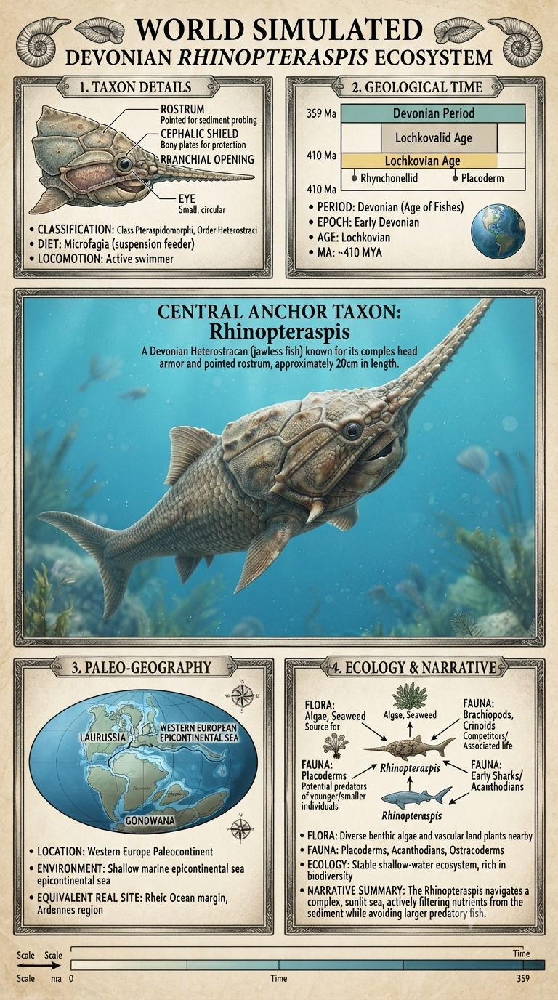
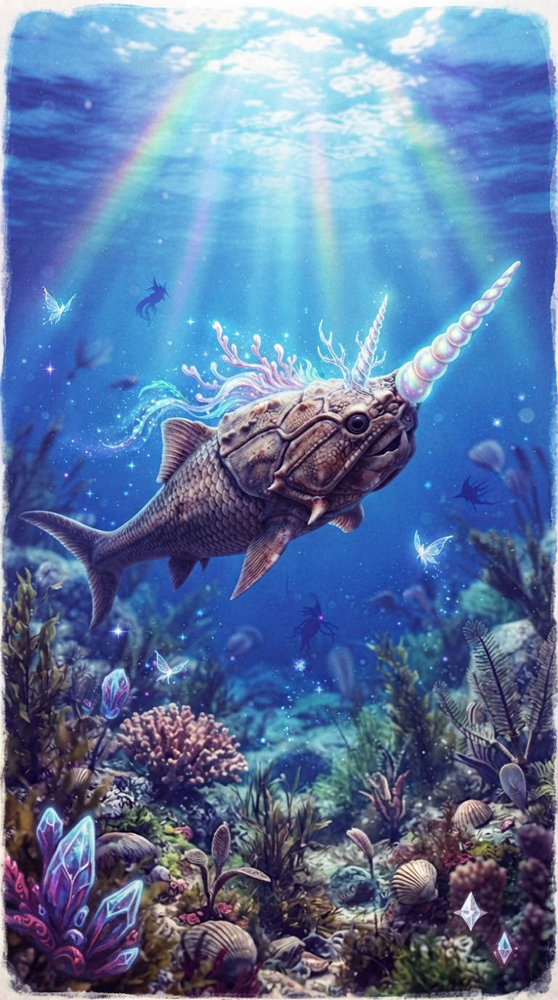

Paleoficha de PalEntropía


TAXÓN:
Rhinopteraspis
CLADO:
Heterostraci (Pteraspidiformes)
DIETA:
Suspensívoro / Detritívoro (filtración de partículas orgánicas y microorganismos).
TAMAÑO:
Entre 20 y 30 cm de longitud.
LOCOMOCIÓN:
Natación pasiva y activa mediante una cola heterocerca y un cuerpo protegido por placas óseas.
TIEMPO:
Devónico Inferior, aproximadamente hace 419–407 millones de años.
GEOGRAFÍA:
Laurussia.
EQUIVALENCIA PALEOGEOGRÁFICA:
Plataformas continentales, estuarios y zonas costeras de aguas poco profundas.
AMBIENTE PALEAOECOLÓGICO:
Mares epicontinentales tropicales con elevada productividad orgánica y abundante aporte de sedimentos.
ECOLOGÍA:
• Flora: Primeras plantas vasculares terrestres, cuya materia orgánica enriquecía los sistemas fluviales y costeros.
• Fauna secundaria: Agnatos diversos y los primeros placodermos depredadores del Devónico.
• Nichos: Organismo nectónico y bentónico. Su característico rostro alargado y las placas laterales le proporcionaban estabilidad hidrodinámica, permitiéndole alimentarse filtrando partículas o removiendo suavemente el sedimento.
• Relaciones: Representa el máximo grado de especialización de los heterostracos. Su armadura dérmica constituía una eficaz defensa frente a los primeros grandes depredadores mandibulados.
CLIMA:
Wm19 (Devónico tropical). Clima global cálido con altos niveles de CO₂ y una rápida expansión de la biodiversidad marina.
ESTADO ECOLÓGICO:
Estable. Rhinopteraspis ejemplifica la extraordinaria diversificación de los peces sin mandíbulas durante el Devónico temprano, ocupando con éxito los nichos de filtración costera antes del dominio de los vertebrados mandibulados.